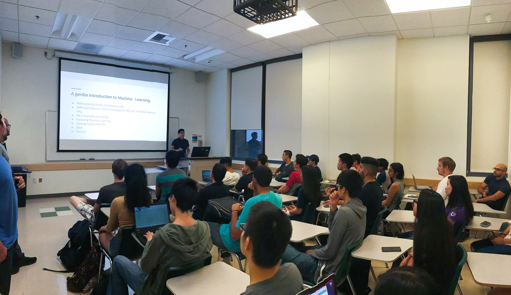

AI for Everyone! is an initiave to introduce more people to the amazing world of Artificial Intelligence through talks and hands-on activities.
I’ve had the pleasure to present my talks and workshops to not only undergraduate/graduate students but also to staff/faculty from several Colleges and Universities in Orange County. Look to the right to find more information about my current talks and workshops, as well as a list of my past speaking events.
Feel free to reach out to me via email or LinkedIn with inquieres about booking me for your next event.
